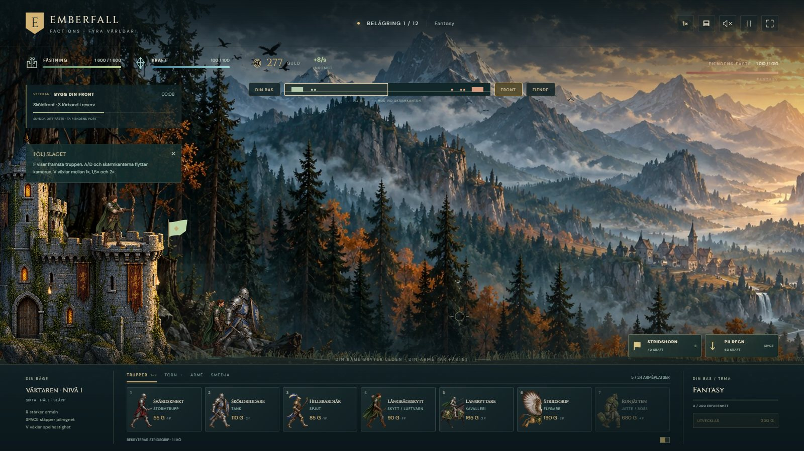
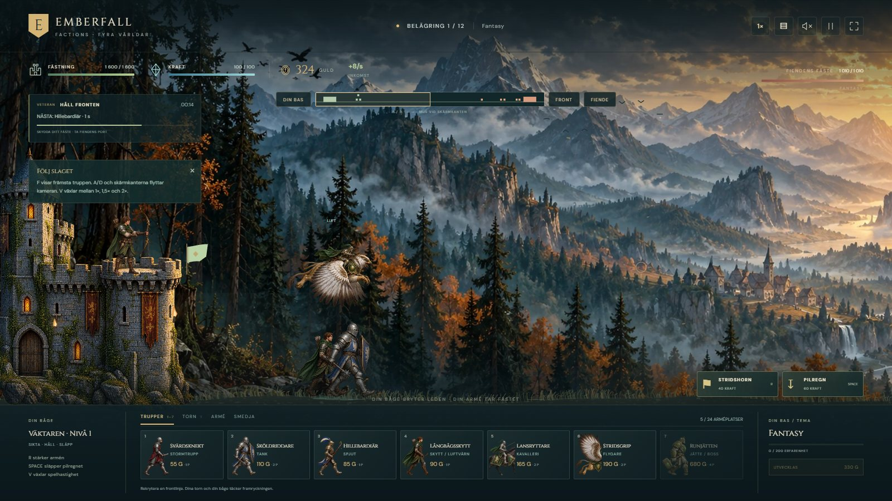
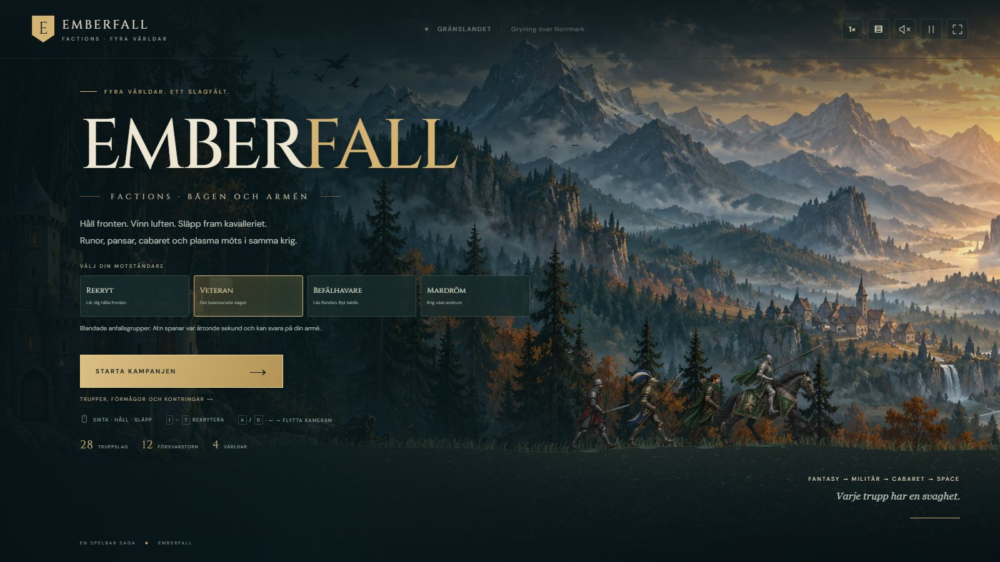
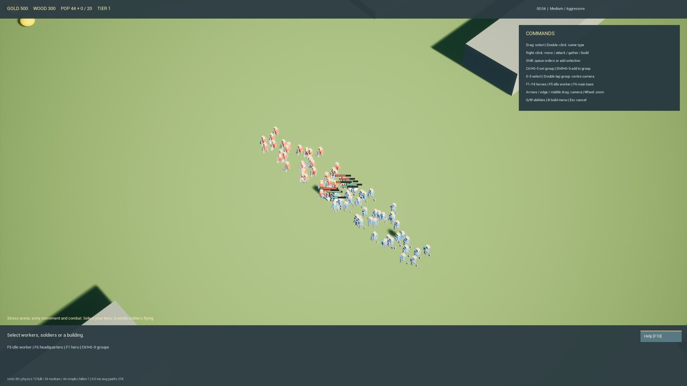
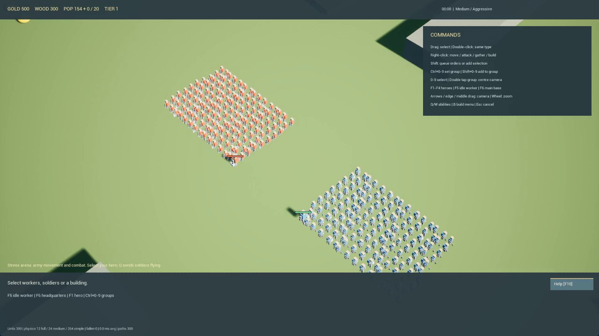
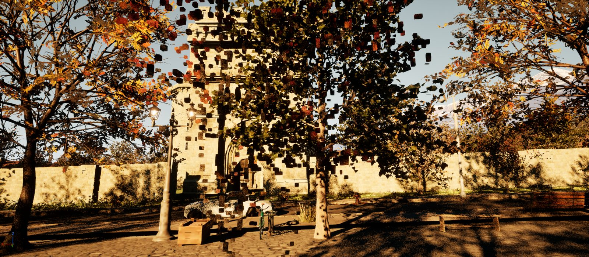
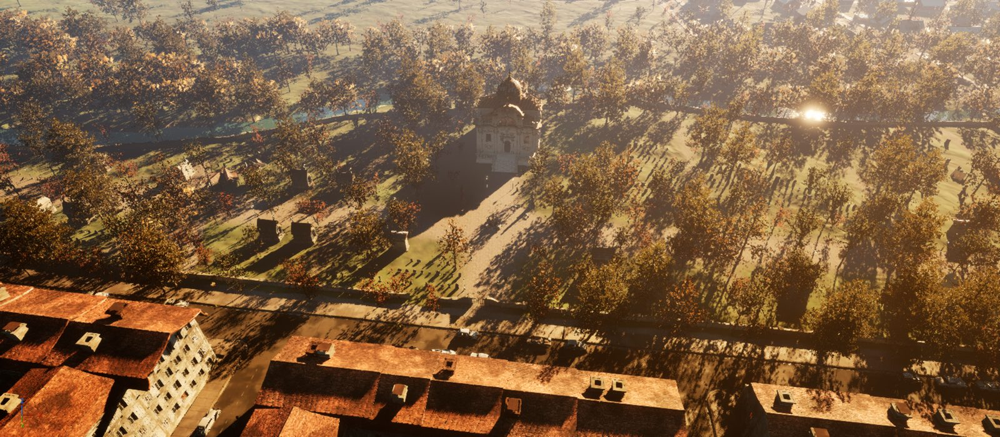

Demos
Projects in motion
Gameplay recordings and screenshots from five projects. Each plate says what the footage is: a recording of play, or a sequence of stills from the engine.
Sundmark trailer
Sequence of stillsFifty seconds through the generated region, its landmarks and the test facility, cut from stills captured in Unreal Engine 5.8. Read the case study →
CastleDefence / Emberfall: Factions
Recorded gameplayA browser recording of recruitment, combat and camera controls. Play it in the browser →



Chaos Crown
Prototype screenshotsCombat in the prototype's stress arena, with simple placeholder characters and environment assets.


Sundmark World Builder
Sequence of stillsScreenshots from the editor put in sequence; not live gameplay footage. Read the case study →


Gameplay Test Facility
Sequence of stillsIn-game screenshots of the hub and rooms put in sequence; not live gameplay footage. All eleven rooms →


Kvarnvik Landmarks
Sequence of stillsEditor screenshots of the monastery and the cemetery park put in sequence; not live gameplay footage.


